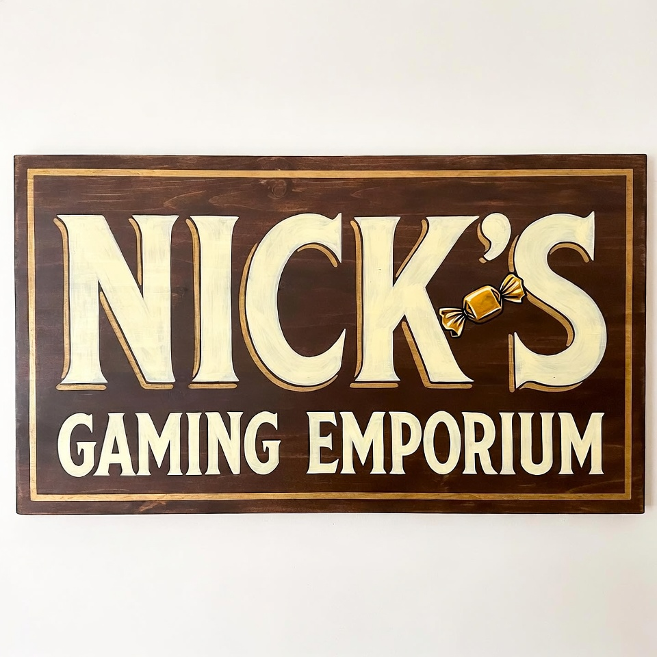

have · jean_macy_1986.png
Jean Macy
Founder · 1925–1996
Widow, haberdasher, mahjong shark. Wrote the rules on the wall. The soul of it, and the last person who could tell Nick no.
Nick's Gaming Emporium · 1986–2016
A true account of the video-game chain his grandmother started, the man who inherited it, and everything he did with thirty years and seven billion dollars once she was no longer watching.
Assembled from the administrators' archive, released 23 April 2025, and from the one fan site that never came down.
The last thing Nick's Gaming Emporium ever did was give money back.
Just after midnight on the 30th of September 2016, in Santa Terezinha de Itaipu, Brazil, a customer returned a copy of Ironcast. The register accepted it — the last entry the company would ever make, a refund of minus 26.72 reais — and then there were no more.
Grandma Jean's first rule was take anything back, no receipt, no questions. The company honoured it right to the very end — which is more than can be said for the man whose name was on the door. He was, by then, four months from a killing and about a year from a cell. This is the distance between those two facts.
Chapter One
1986 — 1996 · the ten good years
Before it was a crime scene it was a candy jar. You have to see the good part or none of the rest lands.
Every honest version of this story begins with a woman who is not the subject of it.
Jean Macy was 61, widowed, and running a haberdashery in Rego Park when her grandson turned up having just been fired from Crazy Lenny's Stereo World. His offence: he had let the neighbourhood kids play the demo console for hours. He called it "loitering with intent to sell." Lenny called it theft of ambience.
Nick Reeves was thirty. He had a mullet the colour of a new penny, a blazer he was already too big for, and a theory about how a game store should feel that he could not stop describing. Jean listened to the whole thing, and then she said the sentence that started a company: "So we'll build the good one."
"Take anything back. Pay people fair. Everyone gets a butterscotch."— Jean's Rules, painted on the back-office wall, Store #2
Store #1 opened in a Chicago strip mall on the 6th of August 1986 — a concession to her brother Morty, the appliance king who put up the money and wanted the number one over his own door. The first sale in company history was a Civil War strategy game and a side-scrolling platformer, total $68.54. But the real store — the flagship, the one Jean rang the first sale at herself — opened in Queens seven weeks later, on the 28th of September. She kept a butterscotch tin by every register. She photographed every new hire against the back-office wall and made it a rule. That corkboard of faces is the only thing in this story that stays good the whole way through.
They grew the way she wanted: 26 stores in ten years, no faster, because of Rule #4 — never open more stores than you can love. First profit came in 1991, five years in. Nobody got rich. Everybody got a butterscotch. For ten years Nick Reeves was exactly the man his nephew thought he was.
this is the part i got right in 1998. i built the fan site when i was fourteen and i thought the whole company was this chapter. the candy, the wall, "the good one." i put a hit counter on it and a midi and i never took it down.
i'm forty-four now. i've read the archive. i'm leaving the old site up — you can still visit it — but somebody has to write the rest of it, and there's nobody left but me.
Chapter Two
1996 — 2000 · the inheritance
Grief is only expensive if you can afford it. After 1994, Nick could afford anything.
Jean died on New Year's Eve, and the man who came back to the office in January was not, in any way that mattered, the same one. He had the IPO money now — a public company's worth of it — and he had a hole exactly the shape of the one person who had ever told him no.
He hired a CEO to fill it. Chip Harrington III was a salesman's salesman, and he had a line ready for the wake: "The best memorial is scale." Nick heard it as permission. Within eighteen months the chain had doubled into four countries. Within three years it was unrecognisable — and so was he.
"The best memorial is scale."— Chet "Chip" Harrington III, CEO, 1997
The archive is polite about the next part, because the archive was later cleaned. But the receipts survive in other people's memoirs. There was Sedona: eleven million dollars sunk into Jean's Arcade, a 400-acre "spiritual retreat with Skee-Ball," and a consciousness consultant named Russ who invoiced for peyote as a "clarity input." There was the beginning of the appetite that the rest of this document is really about — the discovery, by a man who had never had money, that money makes every want quieter for exactly one night.
He named the retreat after her. He named a minor-league hockey team the Butterscotches. He put her word — Emporium, actually his late grandfather Art's word — on eighteen countries' worth of signage. Every monument he built to Jean Macy was, on inspection, a monument to how much he now had. The candy jar stayed on the corkboard. It was the only thing in the founders' corner that couldn't be expensed.
he wasn't at the funeral very long. i was twelve. i remember thinking he had somewhere to be and being proud of him for how busy he was.
he had somewhere to be.
Chapter Three
2000 — 2009 · the record numbers
On paper, the best years the company ever had. On paper.
This is the chapter with the good financials in it, which is how you know it's the worst one.
By 2010 there were 7,000 stores in eighteen countries, and revenue had crested just over $12 billion. Every number an analyst could see went up and to the right. Underneath the numbers, three things were happening at once, and all three led back to the same office.
The ghost payroll. For six years the company paid roughly 1,400 employees who did not exist, through a staffing shell christened — with the confidence of the truly caught — after the CFO herself. When it surfaced in 2003 she took the forty-one months. The books were restated. The impossibly clean record that survives is the product of that restatement: the tidiness is the evidence that something happened.
The retail consultants. A single expense line from CES 1999 — $214,000, filed as "retail consultants" — turned out, under a subpoena, to be Las Vegas escorts. It was not, by the standards of what the founder was personally running up in the same city, a large number.
The Dale Curve. A man named Wickersham, EVP of Pre-Owned, worked out that a customer's used game was worth exactly thirty cents on the dollar — paid back, more often than not, in cash. It was never illegal. It was never once kind. "A memory," he liked to say, "is worth what I say it's worth."
"Nobody will ever download a video game. People need to hold things. It's in the Bible somewhere."— Gordon Pyle, CEO, on why NGE.com would not be rebuilt
The Pokémon Blackout. The blindness had a bloodline. A decade before Pyle decided downloads were a fad, the founder decided the same thing about the biggest franchise of the age. Sometime in 1998, over a steak he did not pay for, Nick told the console maker's regional account manager that Pokémon was "a Tamagotchi with a lawyer" and would be "landfill by spring." The allocation was throttled. For a decade the shelves carried every unloved spin-off — Dash, Battle Revolution, Trozei — and never once the game a child had actually come in for. The buyer who escalated it in 2003 was quietly moved to loss prevention. The record still shows the wound: the spin-offs sold in their tens of thousands; the flagship games that outsold everything, everywhere else, are simply not there.
i worked the floor those summers. kids asked for pokémon diamond every single day, and every single day i pointed them at trozei and watched their faces do the thing. i started keeping a list of what we never had. nobody upstairs ever read the list. i kept it anyway — i'm still keeping it.
The free game they sold six million times. The must-have motion console of Christmas 2006 came with a sports game in the box — a pack-in, free, the whole point of it. NGE's peak-era stores took the disc out. The console rang up as one sale; the game that was meant to be inside it rang up as another, at full price, to a customer who in most cases had no idea it was ever supposed to be free. It is, by units, the best-selling game in the company's history — over six million copies of a game nobody was supposed to pay for. The register, as Dale liked to say, only remembers what you did, not why.
i rang these up. the script called it "the recommended sports title." i watched a dad buy the game his son's console already had, wrap it, and put it under the tree. i knew. i rang it up anyway. i was twenty-three and i needed the job.
And in 2007, at the exact moment the margins were the best they would ever be, a tabloid photographer caught the founder outside a pawn shop in Reno, trading in his own games — at his own store, moments earlier — where a nineteen-year-old clerk, correctly applying the Dale Curve, had offered him thirty cents on the dollar. He took it. He was three hundred and twenty pounds and he was smiling. He later called it "the moment I understood what we'd built." He meant it as a boast.
the numbers went up for nine years. i want to be honest that i was proud of the numbers. i was the webmaster. i made the little graph go up on the investor page and i felt like i was part of it.
every dollar on that graph was a memory somebody got thirty cents for.
Chapter Four
2009 — 2016 · the chemical years
As the company wasted away, Nick got huge. The muscle was pharmaceutical — he looked better than he had in decades and was sicker than he had ever been.
He did not get sober. He got a new supplier. Somewhere around 2011 the pills and the drink gave way to testosterone, growth hormone, and a rotating cabinet of stimulants, and by the 2014 board fight he was a swollen, orange, corded two hundred pounds, forearms on the table, a butterscotch by his hand for the photographers. From a distance it read as discipline. Up close it was the same disease in a better suit — the liver still failing, the heart already enlarged, the paranoia sharpening by the month. He had not mastered an appetite; he had found one that let him look like he had. The jolly founder was gone. What replaced him was harder, oranger, and completely unhinged.
The company, meanwhile, was dying of a thing it refused to name. People had started downloading video games. The answer, in 2015, was EmporiumBucks™ — a store-credit "loyalty" push that took roughly $170 million in real money from 13.8 million customers in exchange for a promise the company already knew it would not be around to keep. Rule #3 — credit is a promise, not a product — did not survive the meeting.
"We go down with the crew."— Nick Reeves, refusing the final layoff, 2016 — the last set of numbers he ever controlled
He won exactly one board fight at the end: he refused the last mass layoff. We go down with the crew. It is why, in the final year, wages exceeded revenue — a number so strange it looks like love from a distance. Up close it was the last thing he could still make the ledger do. He had lost the company, the culture, and the plot. The payroll was the one lever left, and he held it down until the lights went off, so that the shape of the collapse would be his.
On the 8th of February 2016 the company filed Chapter 11. The fire sale ran to 90% off. And on the 29th of September, at 11:48 at night, in Evanston, Illinois, Nick Reeves personally rang the last sale in company history — a copy of Forza Motorsport 6 and Tropico 5, total $5.67 — and gave the boy Jean's candy jar off the counter. It is the single most sentimental thing he ever did, and he did it in front of a camera, on the last possible night, with nothing left to lose by doing it.
he gave the kid the jar. i've watched the clip a thousand times. i used to think it was the best thing in the whole story.
then i learned what the jar cost the kid's parents in EmporiumBucks and i stopped watching it.
Chapter Five
after 2016 · the part the archive can't hold
The company kept its promises to the last. Its founder had none left to keep.
When the company died it took the only structure Nick Reeves had ever really had. What was left was the appetite, the discipline, and no ledger to point either at.
The details of the after are not in the archive, because the archive stopped on the 30th of September 2016. They are in the court record instead, which keeps a different kind of book. Broke in every sense the fire sale had left him, still on the chemistry that had built the body, he spent two years getting stranger and angrier — and at the end of them he killed a man he had known for twenty years: the colleague who had built the Curve, in a fit of what the tabloids were only too happy to call 'roid rage, over a dispute so small that the prosecution struggled to make it sound like a motive at all. It was about a trade-in — he killed the man who decided what a trade-in was worth. It is always, in this story, about what something is worth and who gets to say.
He was convicted. He did not do well inside — a man that controlled rarely does, once the thing he controls is only himself and a routine somebody else sets. He died there, of the ordinary causes that finish men who have run out of both money and reasons, and the news reached his nephew before it reached the press, because there was no one else left to call.
"The register only remembers what you did, not why."— Nick Reeves, 2016. The court felt the same way.
i built a shrine to him when i was fourteen and i was right about one thing and wrong about the man in the middle of it.
the thing i was right about is the candy. jean meant it — everyone gets a butterscotch, no exceptions, not repealable. she built the good one. he inherited it and found out what it was worth to him, and the answer turned out to be thirty cents on the dollar, in credit, on everyone who ever trusted the name.
i'm keeping the site up. both of them. the one i built when i loved him, and this one. you should be able to see the difference. that's the whole point of a record. — t.m.
Interlude · The Sign Over the Door
One company, three signs over the door. The logo is the only witness present the whole way through — and it kept a record of its own. Watch what happens to Jean's candy.

Everyone gets a butterscotch.
Everyone gets a dot.
Founder · 1925–1996
Widow, haberdasher, mahjong shark. Wrote the rules on the wall. The soul of it, and the last person who could tell Nick no.
The subject · 1956–20xx
Fired for kindness in 1986; convicted of murder decades later. Everything between is this document.
CEO · 1997–2003
"The best memorial is scale." Expensed the escorts. Left with an $18M parachute and a suntan.
CFO · removed from the wall, 2004
1,400 employees who did not exist. Forty-one months federal. The dark unfaded rectangle is the most honest thing on the corkboard.
EVP Pre-Owned · "the knife"
Invented the Curve. "A memory is worth what I say it's worth." Knew Nick twenty years. Did not survive the last two.
CEO · 2009–2014
"Nobody will ever download a video game." Killed the website three times. Now keynotes on retail resilience.
CEO · 2003–2009
Rode the console supercycle and thought the wave was him. Resigned for the boats. Plural.
CEO · 2014–2016
The undertaker in a blazer. Project Phoenix. EmporiumBucks. Settled without admitting wrongdoing. Still consulting.
Webmaster · 1998–∞
The nephew. Built the fan site at fourteen. The only person who comes out of this well, and he did it by finally telling the truth.